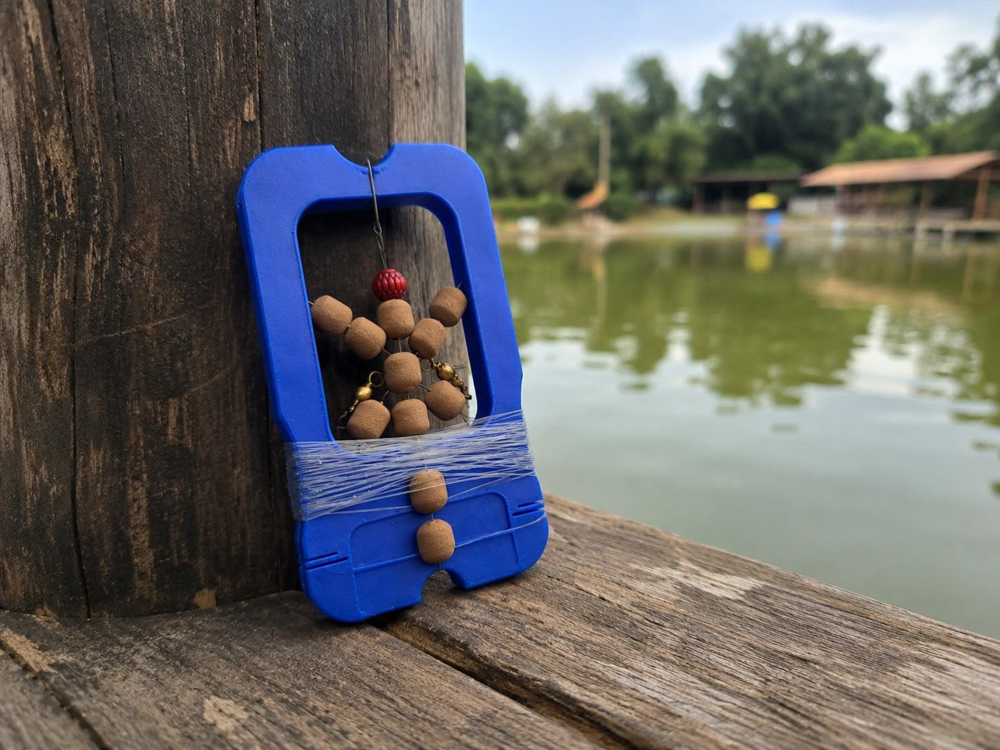
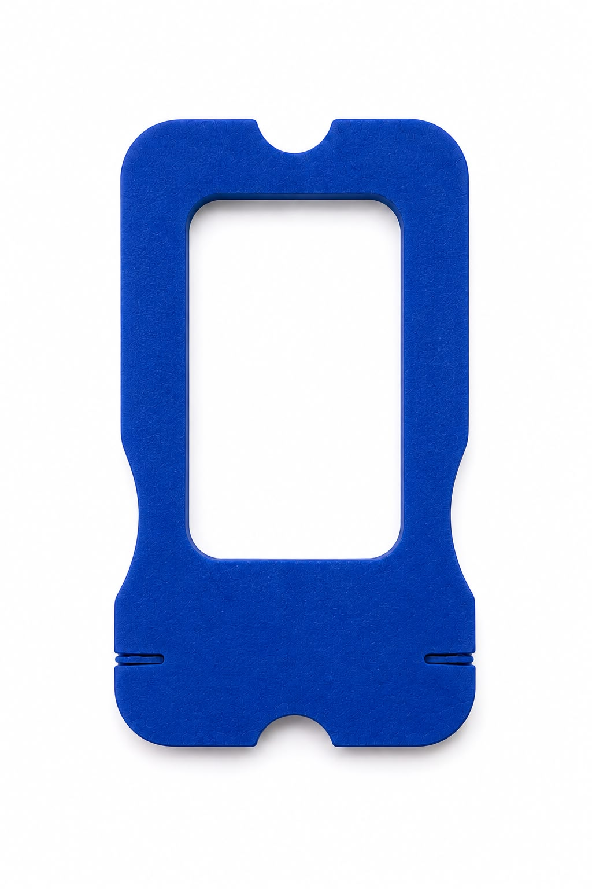

Pesqueiros · Lagos · Rios
Organize seus chicotes de pesca de forma prática e tenha muito mais agilidade durante a pescaria. O Chicoteiro mantém a linha enrolada e facilita a troca na beira d'água.

Um organizador compacto para guardar seus chicotes de pesca de maneira organizada, mantendo a linha enrolada e facilitando a troca durante a pescaria.

👆 Toque (ou clique) em cada cartão para ver mais. Toque de novo para voltar.
Encaixe o anzol na parte superior do Chicoteiro.
Passe a linha pela parte inferior.
Suba a linha e vá enrolando pelas laterais do Chicoteiro.
Para finalizar, encaixe a ponta da linha no suporte interior.
Pronto! Seu chicote fica preso, organizado e pronto para ser utilizado.
Escolha uma aba para ver as dicas.
O manhoso é um chicote de linha com antenas de EVA, cada uma já com anzol e uma miçanga colorida.
O EVA é o material leve e macio de que são feitas as antenas do manhoso.
A antena é o EVA cortado num formato específico, como o de borboleta, por exemplo. É ela que vai no chicote junto com o anzol e a miçanga colorida.
Um joguinho para treinar o reflexo: observe a boia. Quando ela afundar, clique no botão "Fisgar!". Se clicar cedo demais, o peixe foge.
Peixes: 0 · Escaparam: 0
Responda 3 perguntas rápidas.
R$ 0,00
por unidade
Total: R$ 0,00
Comprar pelo WhatsAppVocê será levado para uma conversa no WhatsApp com o pedido já escrito.
Ele guarda chicotes de pesca como o manhoso com EVA da foto. O Chicoteiro mede cerca de 135 × 75 mm, então montagens muito grandes podem ficar apertadas no vão do meio.
O ideal é um chicote por suporte, para nada embolar. Por isso vale a pena levar alguns.
Não. Ele é feito em filamento de impressão 3D. Depois de pescar, é só deixar secar antes de guardar de volta na caixa.
A cor padrão é azul. Sob encomenda podemos fazer outras cores: é só pedir pelo WhatsApp.
Escolha a quantidade e clique em "Comprar pelo WhatsApp". A conversa abre com o pedido pronto, e combinamos pagamento e entrega por lá.